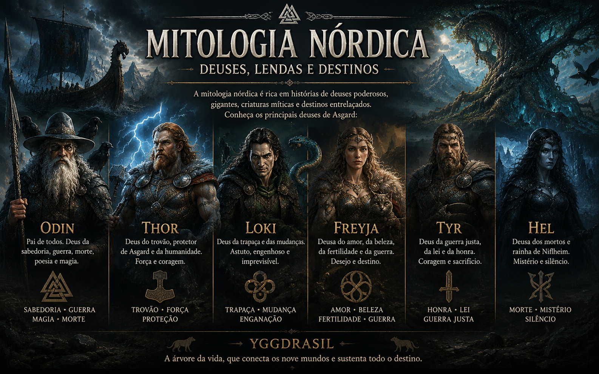
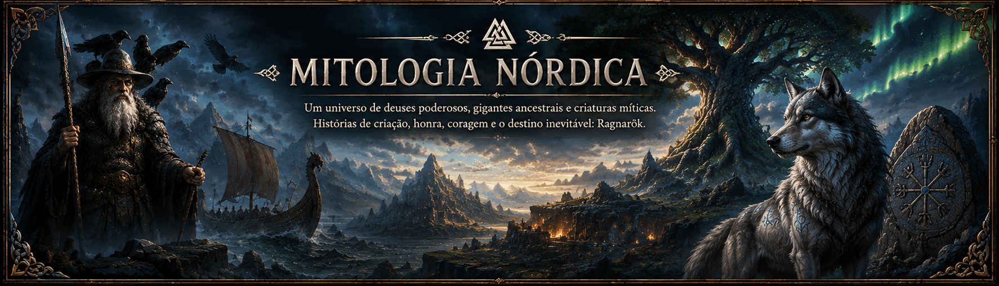

A mitologia nórdica, vinda dos povos escandinavos (vikings), é marcada por um tom épico, melancólico e uma conexão profunda com a natureza selvagem e o frio. Diferente de outras mitologias, os deuses nórdicos não são imortais; eles sabem que um dia enfrentarão o fim de tudo.
-
A Árvore do Mundo: Yggdrasil
-
No centro de tudo está Yggdrasil, um freixo colossal que sustenta os nove mundos em seus galhos
e raízes.
- Asgard: O reino dos deuses (Aesir).
- Midgard: O mundo dos homens (a Terra).
- Jötunheim: A terra dos gigantes de gelo, os grandes rivais dos deuses.
- Helheim: O reino dos mortos que não pereceram em batalha.
-
No centro de tudo está Yggdrasil, um freixo colossal que sustenta os nove mundos em seus galhos
e raízes.
-
Os Principais Deuses
-
O panteão nórdico é dividido principalmente entre os Aesir (deuses da guerra e do governo) e os
Vanir (deuses da fertilidade e natureza).
- Odin: O "Pai de Todos". Trocou um olho por sabedoria, é o deus da magia, da poesia e da guerra. Ele governa Valhalla, o salão onde guerreiros honrados festejam após a morte.
- Thor: O deus do trovão, defensor de Midgard. Com seu martelo Mjölnir, ele é a força bruta contra os gigantes.
- Freyja: Deusa do amor, da beleza e da guerra. Ela lidera as Valquírias, as donzelas que escolhem quem vive e quem morre nas batalhas.
- Loki: O "deus da trapaça". Não é exatamente um vilão no sentido moderno, mas um agente do caos que ora ajuda, ora trai os deuses.
-

-
O panteão nórdico é dividido principalmente entre os Aesir (deuses da guerra e do governo) e os
Vanir (deuses da fertilidade e natureza).
-
O Ragnarök: O Destino Final
Talvez a característica mais marcante dessa mitologia seja o Ragnarök. Diferente de outras culturas que veem o tempo como algo eterno sob o domínio dos deuses, os nórdicos acreditavam que o mundo teria um fim catastrófico.
Nessa batalha final, deuses e monstros se enfrentariam, o sol e a lua seriam devorados, e quase todos morreriam (incluindo Odin e Thor). Porém, o Ragnarök não é apenas destruição, mas um ciclo: após o caos, um novo mundo surgiria, mais puro e verde. -
Honra e Destino
Para os nórdicos, o conceito de Wyrd (destino) era absoluto. Nem os deuses podiam fugir dele. O que definia um homem não era o fato de ele morrer, mas a coragem com que enfrentava seu destino inevitável. Morrer com a espada na mão era a glória máxima para um guerreiro.
